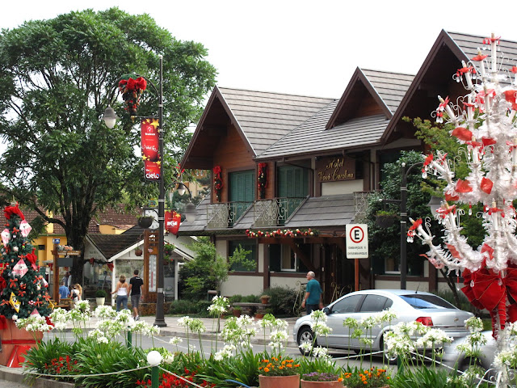
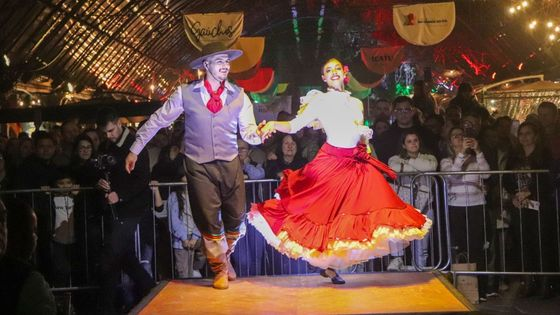

Cultura e costumes de Gramado
Gramado é conhecida por sua cultura rica e influências europeias. Além de sua arquitetura, a cidade também é famosa pela sua gastronomia, especialmente os chocolates e fondues.
Cultura Alemã e Italiana: A herança europeia é evidente na gastronomia, nas tradições e na arquitetura da cidade. Gramado preserva muitas das tradições dos primeiros imigrantes, com festivais e culinária que homenageiam essas raízes.
festival gaucho
De 19 a 29 de setembro, Gramado recebe o evento Gaúchos - Festival da História, Cultura e Tradição. Serão dez dias de celebração à cultura do Rio Grande do Sul com atrações que unem circuito gastronômico, música e dança, piquete, roda de chimarrão, decoração temática, exposições e atrações dedicadas às crianças. Realizado pelo Instituto RSNASCE, o projeto leva para a cidade uma programação gratuita em diferentes locais.